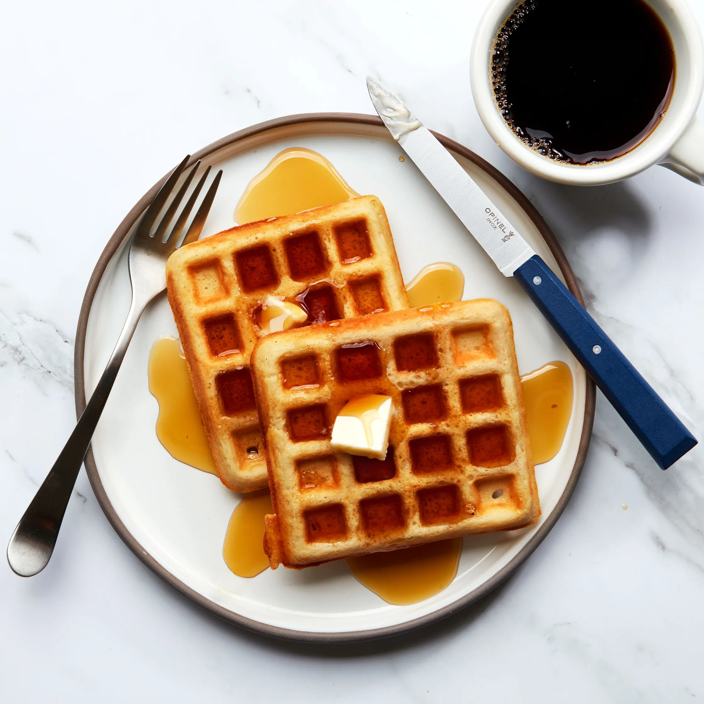

Waffle

Description
This waffle recipe is the only one you'll need to make homemade waffles with your waffle iron.Simple pantry ingredients
mix up quickly in this easy batter that can be used right away or stored in the refrigerator
for up to a week.Serve waffles
hot with whipped cream and fresh fruit or with butter and maple syrup for either breakfast, brunch, or a snack.
Ingredients
- 2 large eggs
- 2 cups all-purpose flour
- 1 ¾ cups milk
- ½ cup vegetable oil
- 1 tablespoon white sugar
- 4 teaspoons baking powder
- ¼ teaspoon salt
- ½ teaspoon vanilla extract
- nonstick cooking spray
Steps
- Preheat a waffle iron according to manufacturer's instructions.
- Whisk eggs in a large bowl until light and fluffy. Add flour, milk, and vegetable oil and mix to combine.
- Whisk in sugar, then mix in baking powder, salt, and vanilla just until smooth, being careful not to overmix.
- Spray the preheated waffle iron with nonstick spray.
- Pour batter onto the hot waffle iron and cook until golden brown and the iron stops steaming, 3 to 5 minutes.